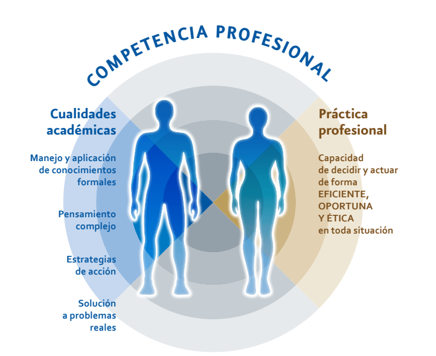

Roque Matias Lopez
FullStack Web Developer
Con mas de 6 años de experiencia desarrollando aplicaciones web como desarrollador de frontend y backend
Educación
- Ingeniero en Sistemas
Computacionales
- 2006-2011, Tecnológico de Estudios Superiores de Valle de Bravo
- Maestría en Ingeniería
en SIstemas
- 2011-2014, Universidad Itaca
- Doctor en Sistemas
Computacionales
- 2006-2011, Universidad dell Sur

Experiencia Profesional
- Jefe de División en Ingeniería en Sistemas COmputacionales
- 2011-2023, Tecnológico de Estudios Superiores de Valle de Bravo
- Docente en el Colegio de Bachilleres Plantel 05 Valle de Bravo
- 2011-2023, CoBAEMex.
- Docente
- 2006-2011, >Grupo ISIMA
Habilidades
- Examen EGEL
- Sobresaliente, CENEVAL
- Certificado en PROFORDERMS
- Competente, CENEVAL
- ECODEMS
- Competente para impartir Educación Media Superior
Otros
- Proyectos comunitarios
- Soporte a empresas
- Consultoria y mas